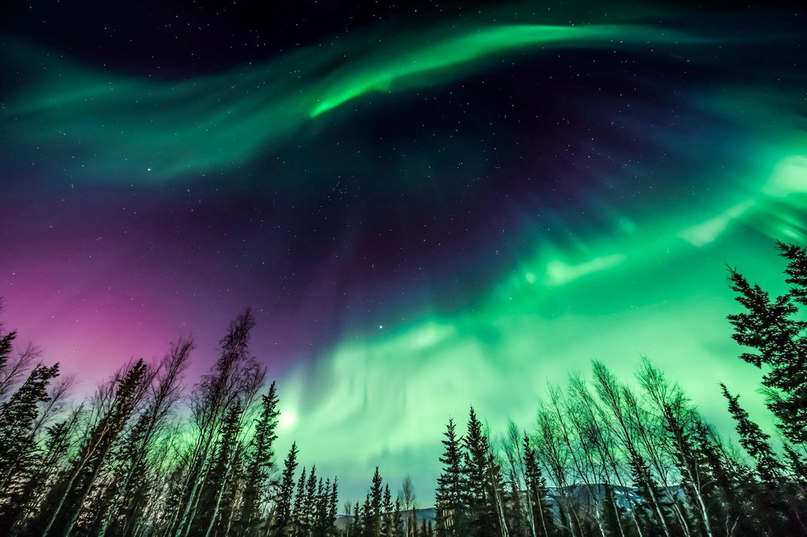

The Northern Lights
October 1, 2021 by Ojiugo Okoroafor

Stargazing is one of my favurite things to do. The scattered blls of twinkling light, the big, bright sining orb,
and the dark canvas all come together to paint one beautiful picture. It is almost crazy how everything
is held perfectly in place. Each night gives a different experience, from the stars holding different positions in the sky,
to the moon changing shape to different crescents.
Now imagine this times ten. Aurora borealis, or the Northern Lights gives stargazing a whole new meaning.
In addition to the already beautiful sky, bright pink, blue and green lights colour the canvas
in swirls and gradients. The painter surprisingly found a way to make the picture even better.
This can be seen in countries close to the Arctic Cirlcle like Iceland, Greenland and Norway from late
August to mid April. Add this to your list of must-sees because it is definitely on mine.